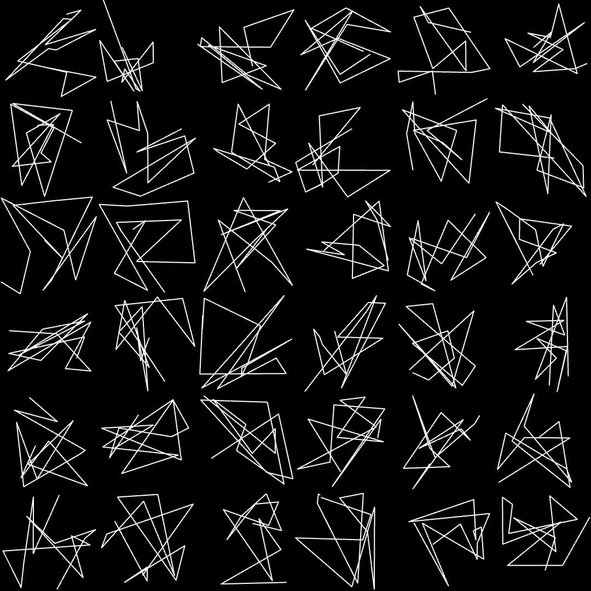

Something’s
taking shape.
This will be the home of Zorphamax, an open-ended design experiment in line, form, and type. Work in progress, made in public.

This will be the home of Zorphamax, an open-ended design experiment in line, form, and type. Work in progress, made in public.
